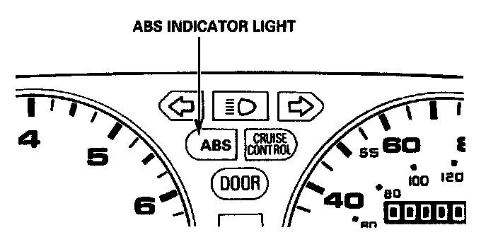

Initial Inspection and Diagnostic Overview
Anti-lock Brake System (ABS) Indicator LightTemporary Driving Conditions:
1. The ABS indicator light will come on and the ABS control unit memorizes the diagnostic trouble code (DTC) under certain conditions.
NOTE: The DTCs are explained. DTC List - Antilock Brake System
- The tire(s) adhesion is lost due to excessive cornering speed.
Problem codes: 5, 5-4, 5-8
- The vehicle loses traction when starting from a stuck condition on a muddy, snowy, or sandy road.
Problem codes: 4-1, 4-2, 4-4, 4-8
- When the parking brake is applied for more than 30 seconds while the vehicle is being driven.
Problem code: 2
- The vehicle is driven on extremely rough road.
The ABS is OK, if the ABS indicator light goes off after the engine is restarted.

2. If you receive a customer's report that the ABS indicator light sometimes comes on, check the system using the ALB checker to confirm whether there is any trouble in the system. Reading and Clearing Diagnostic Trouble Codes
3. The ABS indicator light will come on and the LED will display a code when there is insufficient battery voltage to the ABS control unit. An example would be when the battery is so weak that the car must be jump-started.
After the battery is sufficiently recharged, the ABS indicator light will work normally after the engine is stopped and restarted.
However, after recharging the battery, the code must be cleared from the ABS control unit's memory by disconnecting the ABS B2 (15 A) fuse for at least three seconds.
ABS Indicator Light Circuit:
1. The ABS indicator light, does not go on when the ignition switch is turned on.
Check the following items. If they are OK, check the ABS control unit connectors.
If not loose or disconnected, install a new ABS control unit and recheck:
- Blown ABS indicator light bulb.
- Open circuit in YEL wire between No.23 (7.5 A) fuse and gauge assembly.
- Open circuit in BLU/RED wire between gauge assembly and ABS control unit.
- Loose component grounding of the ABS control unit to the body.
2. The ABS indicator light remains ON after the engine is started, however the LED on the ABS control unit does not blink any code or sub-code. Check for the following:
- Loose or poor connection of the wire harness at the ABS control unit.
- Faulty ABS B2 (15 A) fuse.
- Open circuit in WHT wire between ABS B2 (15 A) fuse and ABS control unit.
- Open circuit in BLK/YEL wire between No. 17 (7.5 A) fuse and ABS control unit.
- Short circuit in BLU/RED wire between gauge assembly and ABS control unit.
- Open circuit in WHT/BLU wire between alternator and ABS control unit.
If the problem is not found, substitute a known good ABS control unit and recheck whether the ABS indicator light remains ON.